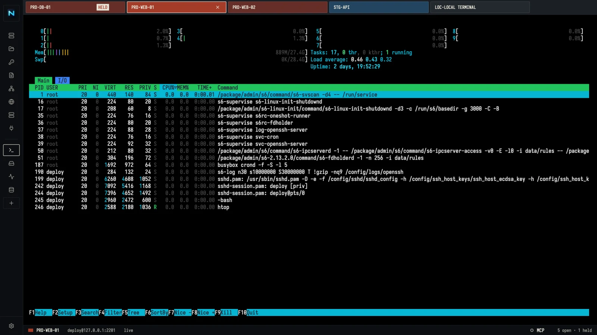
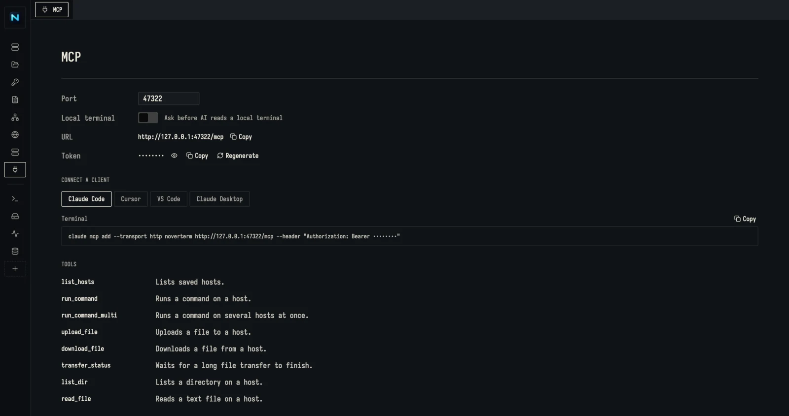
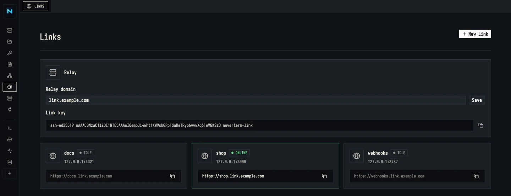
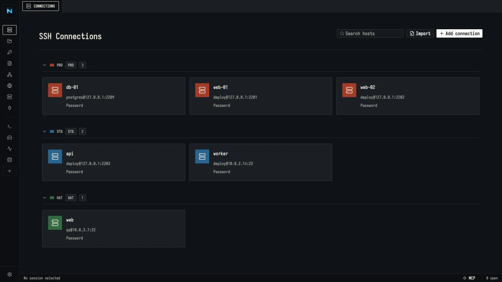
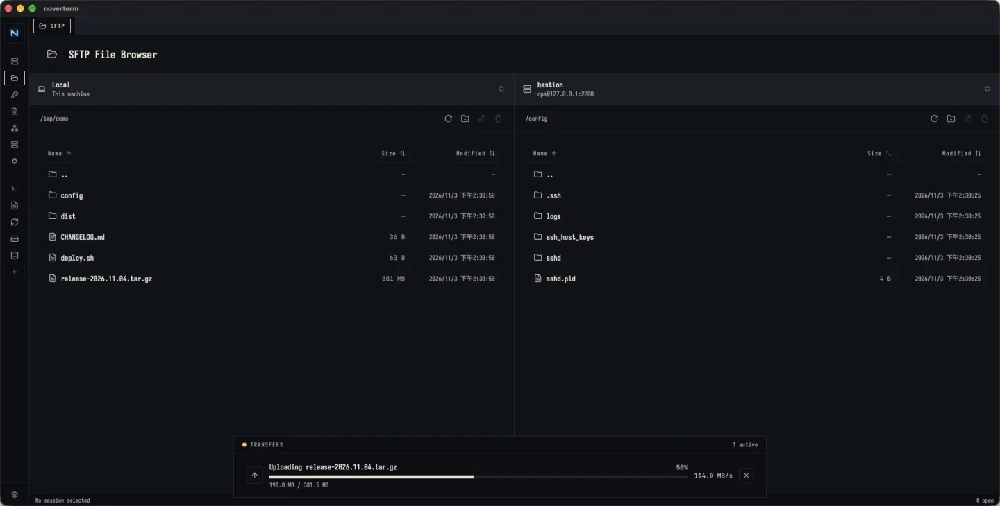
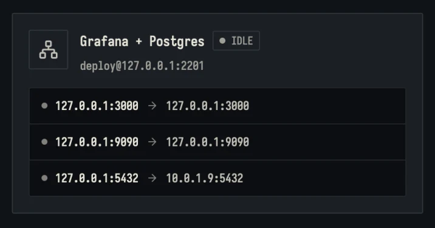
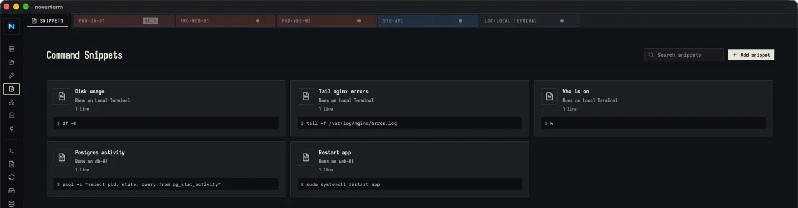
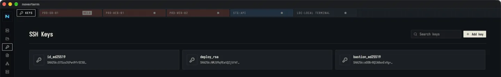
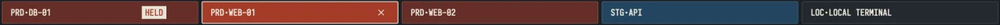
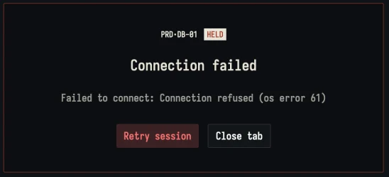

SSH for you and your AI
A native SSH client for macOS and Windows with tabs, SFTP, tunnels and keys. Links put a local web service on a public URL, and the built-in MCP server lets AI agents work your hosts, each step approved by you.
Download for macOS or Windows
Let an AI agent work your hosts
Turn on the MCP server and Claude Code, Cursor, VS Code or Claude Desktop can run commands on your saved hosts, read and write files, run your snippets, open port forwards, publish a dev server through a Link and read your open terminal tabs. Nothing runs until you allow it.
- Listens on 127.0.0.1 only, behind a token kept in Noverterm's local database.
- Passwords and keys stay in Noverterm. The agent sees host names, never credentials.
- Hosts must pass their fingerprint check, and jump hosts work as they do in the terminal.
- Allow once, always allow a host, or deny. A request nobody answers is denied after two minutes.
- Publishing a Link always asks, every time: there is no "always allow" for putting a service online.
AI wants to run a command on web-01
systemctl status nginx --no-pager
Waiting for you. The agent gets nothing until you choose.

Put a local service on a public URL
A Link gives a dev server, a webhook receiver or a demo on your machine an HTTPS address like
shop.link.example.com, for as long as you leave it on.
- It goes through a relay you run on your own server: one Docker image, plus a domain and its wildcard.
- Only keys you add to the relay can connect. Each Noverterm install shows its own Link key to copy.
- HTTPS and WebSockets, names first come first served, and it reconnects by itself when the line drops.
- Plain
ssh -Rworks too, so a server without Noverterm can publish through the same relay.
shop is online
https://shop.link.example.com
Anyone with the URL reaches your dev server. Stop the Link and it is gone.

One window for



- edge.example.net:22fingerprint verified
- 10.0.1.5:22as seen from bastion


Hosts sit in groups, and each group paints its tabs: PRD in rust, STG in harbour blue. Cmd+1 to Cmd+9 jumps between open tabs.
Light on purpose
No Electron underneath
Rust from the window to the wire: the interface is drawn on the GPU with GPUI, no browser engine bundled or borrowed.
Every host stays on this machine
Connections, keys and snippets live in one local SQLite file. No account, no cloud sync.
Nothing phones home
No telemetry. Besides your SSH traffic and your own relay, the only request is the update check against GitHub Releases.
Every key reaches vim and tmux
Kitty keyboard protocol with modifiers, repeat and release; IME input; paste images straight into a session.

Read the box before the host
Every tab is painted like a container door: group colour plus a stencilled code.
How it connects
- Host
- 10.0.1.5
- User
- deploy
- Auth
- id_ed25519
- Jump
- BAS·EDGE
First you save the host and its key.
- Host
- 10.0.1.5
- Key
- ED25519
Then you check its fingerprint once.
- State
- Live
- Route
- LOC → BAS·EDGE → 10.0.1.5
Now it opens as a painted tab.

If the line drops, it waits for you.
Fair questions
PriceIs Noverterm free?
Yes. It is open source under the MIT License. Download a build from GitHub Releases or build it yourself; pull requests are welcome.
PlatformsWhich systems does it run on?
macOS on Apple Silicon (a .dmg) and Windows (an .exe installer). Linux support is in progress.
PrivacyWhere do my hosts and keys live?
In a local SQLite database in the app data folder. There is no account, no telemetry and no cloud sync. The only network traffic besides your SSH connections and your own relay is the update check against GitHub Releases.
BastionsCan I reach private servers through a bastion?
Yes, the way ssh -J does, chained up to five hops. Each host signs in with its own saved credentials and verifies its own fingerprint. The bastion needs AllowTcpForwarding yes, which is the OpenSSH default.
WeightWhy is it so much lighter?
There is no browser inside. The window is drawn on the GPU with GPUI, and SSH, SFTP and tunnels run in Rust (Russh and Tokio), instead of shipping a whole Chromium per app.
UpdatesHow do I get new versions?
Install once. Noverterm checks GitHub Releases on its own and updates itself.
Open your first tab
Download the build for your system from GitHub Releases. Add a host, check its fingerprint, and it opens as a tab like the one in this dialog.